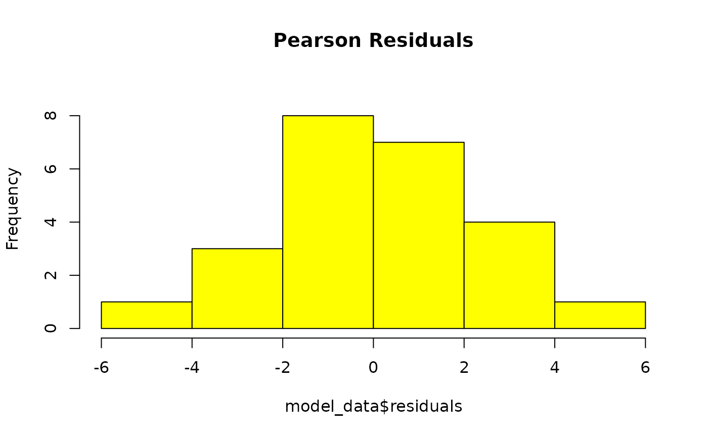
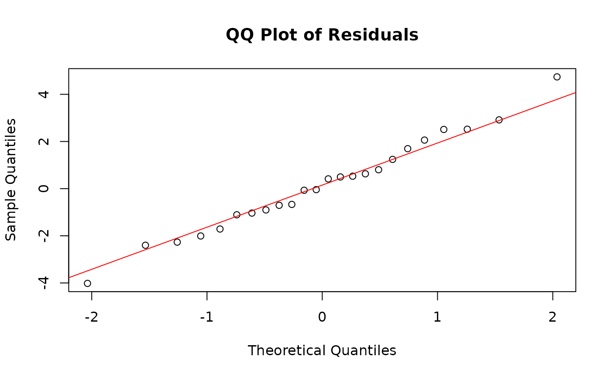
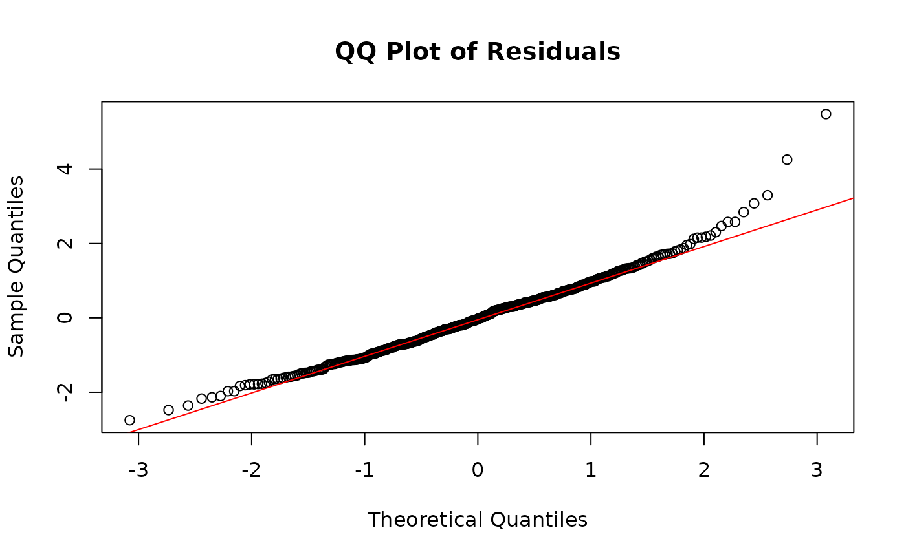
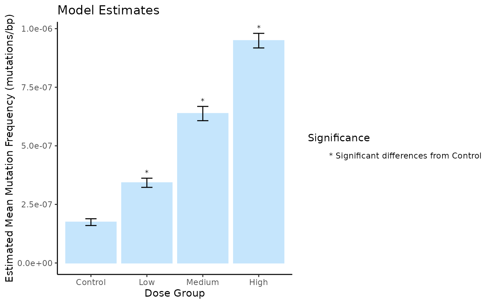
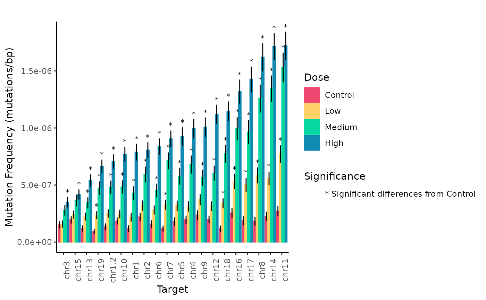
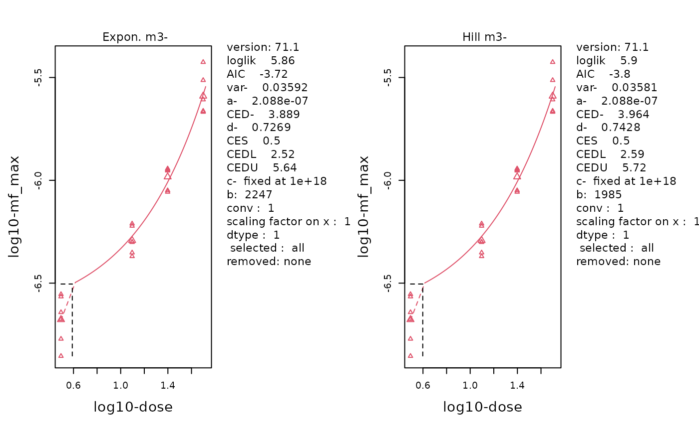
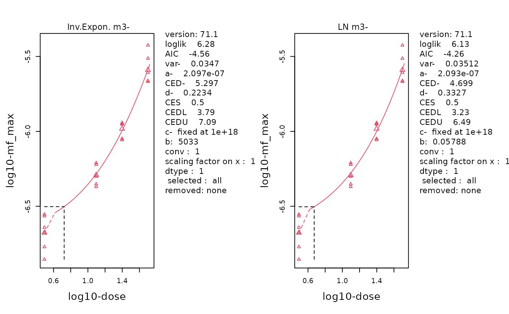
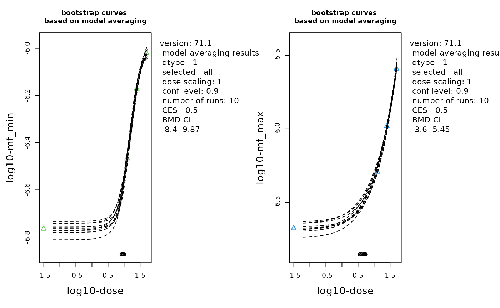
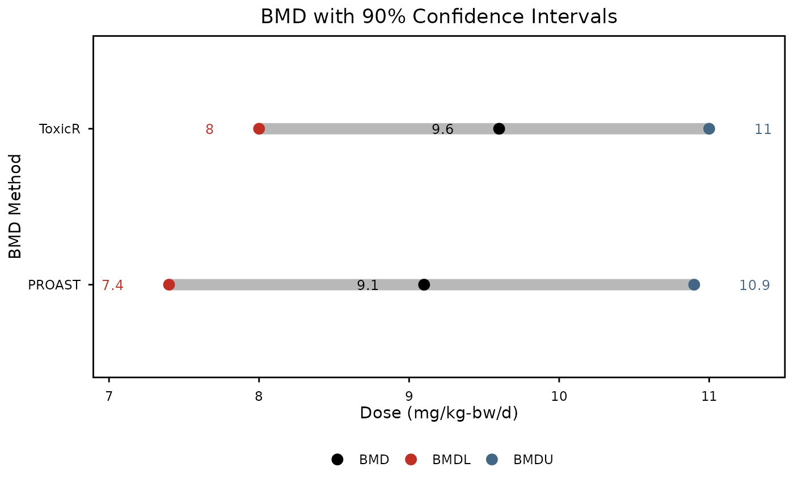

MutSeqR: Analyzing Mutation Frequencies
Annette E. Dodge
Environmental Health Science and Research Bureau, Health Canada, Ottawa, ON, Canada.Matthew J. Meier
matthew.meier@hc-sc.gc.ca Source:vignettes/articles/Analyzing_Mutation_Frequencies.Rmd
Analyzing_Mutation_Frequencies.RmdLoad MutSeqR and Example Data
library(ExperimentHub)
# load the index
eh <- ExperimentHub()Generalized Linear Modeling
An important component of analysing mutagencity data is how mutation frequency (MF) changes based on experimental variables.
The model_mf() function can be used to quantitatively
evaluate how MF changes based on experimental variables. The function
models the proportion of reads that carry a mutation (i.e. the MF)
across user-supplied fixed and/or random effects and interaction
parameters. Depending on the supplied effects, model_mf()
will automatically choose to fit either a generalized linear model (GLM)
using the glm() function from the stats library or a
generalized linear mixed model (GLMM) using the glmer()
function from the lme4 library.
Model Formula
- Fixed effects: The experimental variable(s)/factor(s) of interest.
- Random effects: Variable used to account for variability within a larger group. Covariate.
- Interaction: The product of two or more interacting fixed_effects. An interaction implies that the effect of one fixed effect changes depending on the levels of another fixed effect, indicating a non-additive reationship.
-
Response: the function will model the MF, taking
the mutation count (
sum) and thegroup_depthas input.
The model formula is built as:
cbind(sum, group_depth) ~ fixed_effect1 + fixed_effect2 + ... + (1|random_effect)
If test_interaction is set to TRUE, the model will use
the product of the fixed_effects:
cbind(sum, group_depth) ~ fixed_effect1 * fixed_effect2 * ... + (1|random_effect)
Family
The occurence of mutations is assumed to follow a binomial distribution as:
- There is a finite number of sequenced bases.
- A mutation at any given base is equally probable*.
- Mutations occur independently of other mutations.
- We acknowledge that this does not reflect biological reality.
To account for over-dispersion, the function will fit a GLM with a quasibinomial distribution. If the dispersion parameter of the model is less than 1, the model will be refit using a binomial distribution. The GLMM will always use a binomial distribution.
The model_mf function will fit a generalized linear
model to analyse the effect(s) of given fixed_effects(s) on MF and
perform specified pairwise comparisons between levels of your
factors.
Additional arguments can be passed to the model to further customize it to your needs. Details on the arguments for the generalized linear model can be found at stats::glm and for the general linear mixed model at lme4::glmer.
Estimates & Comparisons
model_mf() provides estimates of the mean for each level
of the fixed effects. Furthermore, pairwise comparisons can be performed
based on a user-supplied table. Mean estimates and comparisons are
conducted using the doBy R library (doBy?). Estimates of the
back-transformed standard errors are approximated using the delta
method. The p-values are adjusted for multiple comparisons using the
Sidak method.
Goodness of Fit
The model_mf function will output the Pearson residuals
appended to the mf_data. The row with the highest residual
will be printed to the console so that users may assess it as an
outlier. Additionally, Pearson residuals will be plotted as a histogram
and a QQ-plot to check for deviances from model assumptions. We assume
that residuals will follow a normal distribution with a mean of 0. Thus,
we expect the histogram to follow a bell curve and the QQ-plot to be
plotted along the y=x line.
General Usage
Mutation data should first be summarised by sample using
calculate_mf(). The mf_data should be output
as a summary table. Be sure to retain the columns for experimental
variables of interest using the retain_metadata_cols
parameter.
You may specify factors and covariates for your model using the
fixed_effects and random_effects parameters
respectively. If more than one fixed_effect is supplied, then you may
specify whether you wish to test the interaction between your
fixed_effects using the test_interaction parameter. For
each fixed effect, you must also include the reference level using the
reference_level parameter. The level specified as the
reference level will be used as the intercept when calculating model
coefficients.
You must specify the columns in your mf_data that
contain the mutation counts and the total_depth per sample using the
muts and total_counts parameters respectively.
Default values should be sufficient if the mf_data was created using
calculate_mf().
To perform pairwise comparisons between levels of your fixed effects,
supply a constrast table using the contrasts parameter.
This can either be a data frame or a filepath to a text file that will
be loaded into R. The table must consist of two columns, each containing
levels within the fixed_effects. The level in the first column will be
compared to the level in the second column for each row.
If the user supplies multiple fixed effects to the model, then each value in the contrasts table must include levels for all fixed_effects. Within each value, the levels of the different fixed_effects should be seperated by a colon. For example, if we have fixed effects dose and tissue, one comparison might be control:lung vs. control:heart. The function will calculate the fold-difference in MF of the first column relative to the second column. The function will also provide the p-value denoting the significance of the difference. If you specify multiple pairwise comparisons, then the p-values will automatically be corrected for multiple comparisons using the Sidak method.
Output
The function will output a list of results.
- model: the glmm or glmer model object.
- model_formula: the formula given to glm or glmer.
- model_data: the supplied
mf_datawith added column for Pearson residuals. - summary: the summary of the model.
- anova: the analysis of variance for models with two or more fixed_effects. See car::Anova..
- residuals_histogram: the Pearson residuals plotted as a histogram. This is used to check whether the variance is normally distributed. A symmetric bell-shaped histogram, evenly distributed around zero indicates that the normality assumption is likely to be true.
- residuals_qq_plot: the Pearson residuals plotted in a quantile-quantile plot. For a normal distribution, we expect points to roughly follow the y=x line.
- point_estimates_matrix: the contrast matrix used to generate point-estimates for the fixed effects.
- point_estimates: the point estimates for the fixed effects.
- pairwise_comparisons_matrix: the contrast matrix used to conduct the
pairwise comparisons specified in the
contrasts. - pairwise_comparisons: the results of pairwise comparisons specified
in the
contrasts.
Examples
Example 1. Model by Dose
Example 1. Model the effect of dose on MF. Our example data consists of 24 mouse samples, exposed to 3 doses of BaP or a vehicle control. Dose Groups are : Control, Low, Medium, and High. We will determine if the MFmin of each BaP dose group is significantly increased from that of the Control group. Example data is the same as that used in the vignette. See the vignette for information on importing and filtering the data.
First, we will calculate MF per sample while retaining the dose column.
# load example data:
example_data <- eh[["EH9861"]]
mf_data_global <- calculate_mf(
mutation_data = example_data,
cols_to_group = "sample",
subtype_resolution = "none",
retain_metadata_cols = c("dose_group", "dose")
)Next, we will build a contrasts table that compares each BaP dose group back to the control group.
# Create a contrasts table for pairwise comparisons
contrasts_table <- data.frame(
col1 = c("Low", "Medium", "High"),
col2 = c("Control", "Control", "Control")
)Finally, we will run the model.
# Run the model
model_by_dose <- model_mf(
mf_data = mf_data_global,
fixed_effects = "dose_group",
muts = "sum_min",
total_count = "group_depth",
reference_level = "Control",
contrasts = contrasts_table
)Residuals Histogram

GLM residuals of MFmin modelled as an effect of Dose. x is pearson’s residuals, y is frequency. Plotted to validate model assumptions. n = 24.
The residuals form a bell-curve with a mean of 0 indicating that they follow a normal distribution.
Residuals QQ-plot

GLM residuals of MFmin modelled as an effect of Dose expressed as a quantile-quantile plot. Y is the pearson’s residuals of the model in ascending order x is the quantiles of standard normal distribution for n of 24. Plotted to validate model assumptions.
The QQ-plot depicts points ollowing the y=x line, indicating that residuals follow a normal distribution. Our model assumptions have been validated.
Model Summary
model_by_dose$summary##
## Call:
## stats::glm(formula = model_formula, family = "quasibinomial",
## data = mf_data)
##
## Coefficients:
## Estimate Std. Error t value Pr(>|t|)
## (Intercept) -15.56285 0.08290 -187.736 < 2e-16 ***
## dose_groupHigh 1.69485 0.08915 19.011 2.84e-14 ***
## dose_groupLow 0.67512 0.10066 6.707 1.58e-06 ***
## dose_groupMedium 1.29746 0.09563 13.567 1.51e-11 ***
## ---
## Signif. codes: 0 '***' 0.001 '**' 0.01 '*' 0.05 '.' 0.1 ' ' 1
##
## (Dispersion parameter for quasibinomial family taken to be 4.604243)
##
## Null deviance: 2919.634 on 23 degrees of freedom
## Residual deviance: 89.569 on 20 degrees of freedom
## AIC: NA
##
## Number of Fisher Scoring iterations: 5The model summary indicates that dose group has a significant effect on mutation frequency. Our model fit a quasibiniomal model with a low dispersion parameter (4.6) indicating a good fit.
Model Estimates
Table 18. model_by_dose$point_estimates: Estimated Mean Mutation Frequency per Dose.
The point estimates returns the mean values estimated by the model for each level of the fixed effects. We can compare these values to the empirical mean that is calculated directly from our data to check that the model fit the data well.
Pairwise Comparisons
Table 19. model_by_dose$pairwise_comparisons
We performed pairwise comparisons to determine which dose groups were significantly different from control. The pairwise comparisons were performed based on the contrasts table supplied to model_mf(). Our results show that the mutation frequency is signifincatly increased for all dose groups relative to the control group, ranging from a 2-fold increase in the Low dose group to a 5.5-fold increase in the High dose group.
Due to the novelty of using ECS for mutagenicity assessmnent, there are no widely established thresholds for what constitutes a biologically meaningful change. However, previous guidelines for interpreting biological relevance, derived from traditional mutagenicity assays, recommend a minimum fold change of 1.5 (White et al., 2020).
Example 2. Model by Dose and Target
Example 2. Model the effects of dose and genomic locus on MF. Sequencing for the example data was done on a panel of 20 genomic targets. We will determine if the MF of each BaP dose group is significantly different from the Control individually for all 20 targets. In this model, dose group and target label will be our fixed effects. We include the interaction between the two fixed effects. Because sample will be a repeated measure, we will use it as a random effect. See the vignette for more information on how we imported and filtered this dataset.
First, calculate MF for each sample and genomic locus, while retaining the dose column.
mf_data_rg <- calculate_mf(
mutation_data = example_data,
cols_to_group = c("sample", "label"),
subtype_resolution = "none",
retain_metadata_cols = "dose_group"
)Next, create a contrasts table the compares each dose group back to the control for each genomic locus:.
combinations <- expand.grid(dose_group = unique(mf_data_rg$dose_group),
label = unique(mf_data_rg$label))
combinations <- combinations[combinations$dose_group != "Control", ]
combinations$col1 <- with(combinations, paste(dose_group, label, sep = ":"))
combinations$col2 <- with(combinations, paste("Control", label, sep = ":"))
contrasts2 <- combinations[, c("col1", "col2")]Finally, run the model. As this model is more complex, we will
improve covergence by supplying the control argument, which is passed
directly to lme4::glmer().
model_by_target <- model_mf(mf_data = mf_data_rg,
fixed_effects = c("dose_group", "label"),
test_interaction = TRUE,
random_effects = "sample",
muts = "sum_min",
total_count = "group_depth",
contrasts = contrasts2,
reference_level = c("Control", "chr1"),
control = lme4::glmerControl(optimizer = "bobyqa",
optCtrl = list(maxfun = 2e5))
)Residuals Histogram

GLMM residuals of MFmin modelled as an effect of Dose and Genomic Target. x is pearson’s residuals, y is frequency. Plotted to validate model assumptions. n = 24.
Residuals QQ-plot

GLMM residuals of MFmin modelled as an effect of Dose and Genomic Target expressed as a quantile-quantile plot. Y is the pearson’s residuals of the model in ascending order x is the quantiles of standard normal distribution for n of 24. Plotted to validate model assumptions.
The histogram and the QQ plot indicate normally distributed residuals.
Model Summary
model_by_target$summary## Generalized linear mixed model fit by maximum likelihood (Laplace
## Approximation) [glmerMod]
## Family: binomial ( logit )
## Formula: cbind(sum_min, group_depth) ~ dose_group * label + (1 | sample)
## Data: mf_data
## Control: ..1
##
## AIC BIC logLik -2*log(L) df.resid
## 2825.5 3163.6 -1331.7 2663.5 399
##
## Scaled residuals:
## Min 1Q Median 3Q Max
## -2.7513 -0.7140 -0.0326 0.6138 5.4812
##
## Random effects:
## Groups Name Variance Std.Dev.
## sample (Intercept) 0.01088 0.1043
## Number of obs: 480, groups: sample, 24
##
## Fixed effects:
## Estimate Std. Error z value Pr(>|z|)
## (Intercept) -1.596e+01 2.222e-01 -71.807 < 2e-16 ***
## dose_groupHigh 1.903e+00 2.395e-01 7.947 1.92e-15 ***
## dose_groupLow 6.208e-01 2.738e-01 2.267 0.023380 *
## dose_groupMedium 1.293e+00 2.612e-01 4.951 7.39e-07 ***
## labelchr1.2 1.382e-01 2.824e-01 0.489 0.624624
## labelchr10 4.517e-01 2.682e-01 1.684 0.092109 .
## labelchr11 8.366e-01 2.641e-01 3.168 0.001535 **
## labelchr12 5.183e-01 2.660e-01 1.948 0.051365 .
## labelchr13 1.984e-02 2.908e-01 0.068 0.945593
## labelchr14 6.560e-01 2.671e-01 2.456 0.014043 *
## labelchr15 5.084e-01 2.660e-01 1.911 0.056012 .
## labelchr16 7.757e-01 2.693e-01 2.881 0.003970 **
## labelchr17 4.593e-01 2.885e-01 1.592 0.111307
## labelchr18 -7.519e-03 2.958e-01 -0.025 0.979721
## labelchr19 -2.378e-01 3.084e-01 -0.771 0.440585
## labelchr2 6.258e-01 2.660e-01 2.352 0.018661 *
## labelchr3 2.568e-01 2.863e-01 0.897 0.369732
## labelchr4 5.106e-01 2.773e-01 1.841 0.065603 .
## labelchr5 4.209e-01 2.824e-01 1.490 0.136186
## labelchr6 2.937e-01 2.806e-01 1.046 0.295350
## labelchr7 -3.983e-04 2.958e-01 -0.001 0.998926
## labelchr8 4.383e-01 2.908e-01 1.507 0.131704
## labelchr9 7.000e-01 2.671e-01 2.621 0.008766 **
## dose_groupHigh:labelchr1.2 -2.483e-01 3.022e-01 -0.822 0.411347
## dose_groupLow:labelchr1.2 -2.540e-03 3.459e-01 -0.007 0.994141
## dose_groupMedium:labelchr1.2 -2.494e-02 3.289e-01 -0.076 0.939548
## dose_groupHigh:labelchr10 -4.750e-01 2.882e-01 -1.648 0.099285 .
## dose_groupLow:labelchr10 -3.356e-01 3.360e-01 -0.999 0.317857
## dose_groupMedium:labelchr10 -3.318e-01 3.167e-01 -1.048 0.294861
## dose_groupHigh:labelchr11 -5.554e-02 2.809e-01 -0.198 0.843268
## dose_groupLow:labelchr11 4.252e-01 3.174e-01 1.340 0.180390
## dose_groupMedium:labelchr11 4.359e-01 3.029e-01 1.439 0.150068
## dose_groupHigh:labelchr12 -1.676e-01 2.836e-01 -0.591 0.554373
## dose_groupLow:labelchr12 -1.544e-01 3.287e-01 -0.470 0.638477
## dose_groupMedium:labelchr12 -1.756e-01 3.115e-01 -0.564 0.572958
## dose_groupHigh:labelchr13 -3.978e-01 3.125e-01 -1.273 0.202970
## dose_groupLow:labelchr13 2.170e-03 3.561e-01 0.006 0.995138
## dose_groupMedium:labelchr13 -2.386e-01 3.425e-01 -0.697 0.486037
## dose_groupHigh:labelchr14 1.207e-01 2.832e-01 0.426 0.670094
## dose_groupLow:labelchr14 2.822e-01 3.228e-01 0.874 0.381936
## dose_groupMedium:labelchr14 4.877e-01 3.055e-01 1.596 0.110378
## dose_groupHigh:labelchr15 -1.145e+00 2.935e-01 -3.903 9.51e-05 ***
## dose_groupLow:labelchr15 -4.122e-01 3.348e-01 -1.231 0.218290
## dose_groupMedium:labelchr15 -6.712e-01 3.214e-01 -2.088 0.036792 *
## dose_groupHigh:labelchr16 -2.607e-01 2.878e-01 -0.906 0.364977
## dose_groupLow:labelchr16 1.133e-01 3.279e-01 0.346 0.729681
## dose_groupMedium:labelchr16 6.542e-02 3.125e-01 0.209 0.834154
## dose_groupHigh:labelchr17 1.326e-01 3.059e-01 0.434 0.664586
## dose_groupLow:labelchr17 3.705e-01 3.457e-01 1.072 0.283845
## dose_groupMedium:labelchr17 3.523e-01 3.308e-01 1.065 0.286780
## dose_groupHigh:labelchr18 3.822e-01 3.118e-01 1.226 0.220225
## dose_groupLow:labelchr18 4.491e-01 3.525e-01 1.274 0.202678
## dose_groupMedium:labelchr18 5.986e-01 3.347e-01 1.789 0.073665 .
## dose_groupHigh:labelchr19 6.478e-02 3.273e-01 0.198 0.843111
## dose_groupLow:labelchr19 3.157e-01 3.689e-01 0.856 0.392152
## dose_groupMedium:labelchr19 3.342e-01 3.522e-01 0.949 0.342680
## dose_groupHigh:labelchr2 -6.041e-01 2.869e-01 -2.106 0.035210 *
## dose_groupLow:labelchr2 -2.459e-01 3.312e-01 -0.742 0.457836
## dose_groupMedium:labelchr2 -2.993e-01 3.138e-01 -0.954 0.340146
## dose_groupHigh:labelchr3 -1.072e+00 3.178e-01 -3.375 0.000739 ***
## dose_groupLow:labelchr3 -5.817e-01 3.701e-01 -1.572 0.116009
## dose_groupMedium:labelchr3 -6.911e-01 3.503e-01 -1.973 0.048510 *
## dose_groupHigh:labelchr4 -2.788e-01 2.967e-01 -0.940 0.347321
## dose_groupLow:labelchr4 -1.492e-01 3.434e-01 -0.435 0.663885
## dose_groupMedium:labelchr4 -5.001e-02 3.234e-01 -0.155 0.877121
## dose_groupHigh:labelchr5 -2.603e-01 3.023e-01 -0.861 0.389180
## dose_groupLow:labelchr5 -4.738e-02 3.471e-01 -0.136 0.891432
## dose_groupMedium:labelchr5 -1.236e-01 3.312e-01 -0.373 0.709068
## dose_groupHigh:labelchr6 -2.353e-01 2.999e-01 -0.785 0.432557
## dose_groupLow:labelchr6 -4.394e-02 3.448e-01 -0.127 0.898606
## dose_groupMedium:labelchr6 -2.395e-01 3.307e-01 -0.724 0.468894
## dose_groupHigh:labelchr7 1.376e-01 3.131e-01 0.439 0.660386
## dose_groupLow:labelchr7 4.021e-01 3.530e-01 1.139 0.254618
## dose_groupMedium:labelchr7 5.092e-01 3.355e-01 1.518 0.129058
## dose_groupHigh:labelchr8 2.822e-01 3.074e-01 0.918 0.358623
## dose_groupLow:labelchr8 5.457e-01 3.454e-01 1.580 0.114098
## dose_groupMedium:labelchr8 6.388e-01 3.299e-01 1.936 0.052824 .
## dose_groupHigh:labelchr9 -4.547e-01 2.867e-01 -1.586 0.112740
## dose_groupLow:labelchr9 -1.701e-01 3.304e-01 -0.515 0.606713
## dose_groupMedium:labelchr9 -4.265e-01 3.172e-01 -1.345 0.178701
## ---
## Signif. codes: 0 '***' 0.001 '**' 0.01 '*' 0.05 '.' 0.1 ' ' 1We see that several fixed effects have significance.
ANOVA
model_by_target$anova## Analysis of Deviance Table (Type II Wald chisquare tests)
##
## Response: cbind(sum_min, group_depth)
## Chisq Df Pr(>Chisq)
## dose_group 600.61 3 < 2.2e-16 ***
## label 1239.68 19 < 2.2e-16 ***
## dose_group:label 129.41 57 1.493e-07 ***
## ---
## Signif. codes: 0 '***' 0.001 '**' 0.01 '*' 0.05 '.' 0.1 ' ' 1Our anova shows that both fixed effects (dose and label) significantly affect MF. Their interaction is also significant.
Model Estimates
Table 20. model_by_target$point_estimates: Estimated Mean Mutation Frequency per Dose and Genomic Target.
Pairwise Comparisons
Table 21. model_by_target$pairwise_comparisons.
Our pairwise comparisons indicate that all targets show a dose response. ie. we see a significant increase in MF compared to control for the BaP-dose groups within all targets. However, the fold-increase in MF from control to high dose varies depending on the target.
Plot Model Results
Plot the results of model_mf() using
plot_model_mf(). This function will create a bar or line
plot of the point estimates. Users can include the estimated standard
error as error bars with plot_error_bars and add
significance labels based on the pairwise comparisons with
plot_signif. The function can plot model results with up to
two fixed effects. Users must specify which fixed effect should be
represented on the x-axis with x_effect. The other fixed
effect will be represented by the fill aesthetic.
When adding significance labels, the function will generate a unique
symbol for each unique level or combination of levels in column 2 of the
contrasts table. If using two fixed effects, but your comparisons only
contrast levels of one fixed effect, you may specify this using the
ref_effect parameter. Supply it with the fixed effect that
is being contrasted to reduce the number of unique symbols
generated.
The output is a ggplot object that can be modified with ggplot2.
Plot Model by Dose
plot <- plot_model_mf(
model_by_dose,
plot_type = "bar",
x_effect = "dose",
plot_error_bars = TRUE,
plot_signif = TRUE,
x_order = c("Control", "Low", "Medium", "High"),
x_label = "Dose Group",
y_label = "Estimated Mean Mutation Frequency (mutations/bp)"
)
plot
Mean Mutation Frequency Minimum (mutations/bp) per Dose estimated using a generalized linear model. Error bars are the S.E.M. Symbols indicate significance differences (p < 0.05).
Plot Model by Dose and Target
In this example, we only made comparisons between dose groups. For each contrast, we held the label (target) constant. Thus, we will set the ref_effect to dose_group so that significance labels are generated to indicate differences in dose, and not label.
# Define the order of the genomic targets for the x-axis:
# We will order them from lowest to highest MF at the High dose.
label_order <- model_by_target$point_estimates %>%
dplyr::filter(dose_group == "High") %>%
dplyr::arrange(Estimate) %>%
dplyr::pull(label)
# Define the order of the doses for the fill
dose_order <- c("Control", "Low", "Medium", "High")
plot <- plot_model_mf(
model = model_by_target,
plot_type = "bar",
x_effect = "label",
plot_error_bars = TRUE,
plot_signif = TRUE,
ref_effect = "dose_group",
x_order = label_order,
fill_order = dose_order,
x_label = "Target",
y_label = "Mutation Frequency (mutations/bp)",
fill_label = "Dose",
plot_title = "",
custom_palette = c("#ef476f",
"#ffd166",
"#06d6a0",
"#118ab2")
)
# Rotate the x-axis labels for clarity using ggplot2 functions.
plot <- plot + ggplot2::theme(axis.text.x = ggplot2::element_text(angle = 90))
plot
Mean Mutation Frequency Minimum (mutations/bp) per Genomic Target and Dose estimated using a generalized linear mixed model. Error bars are the SEM. Symbols indicate significance differences (p < 0.05) between dose levels for individual genomic regions.
These plots facilitate the interpretation of results. We can clearly see how MF varies based on the genomic target while increasing with dose.
Exporting Model Results
write_excel() will extract the mf_data, point_estimates,
and pairwise_comparisons from model_mf() output to write to
an excel workbook. To export model results, provide
write_excel with the output of model_mf and
set the model_results parameter to TRUE.
Example 3. Export model results
write_excel(
model_by_dose,
workbook_name = "Example_model",
model_results = TRUE
)Benchmark Dose Modeling
Dose-response models are essential for quatitative risk assessment of mutagenicity, as they provide a framework to evaluate the levels at which exposure to a substance might cause an adverse effect. The benchmark dose (BMD) is a dose that produces a predetermined change in the measured response, defined as the benchmark response (BMR). The BMD is used as a point of departure to derive human health-based guidance values to inform regulatory risk assessment such as the reference dose (RfD), the derived no-effect level (DNEL) or the acceptable daily intake (ADI) (Committee et al. 2022).
The BMD is estimated by applying various mathmatical models to fit
the dose-response data. Some requirements must be met before modelling
the BMD. There must be a clear dose-response trend in the MF data. We
suggest using model_mf() to test for significant increases
in MF with dose prior to running a BMD analysis. In general, studies
with more dose groups and a graded monotonic response with dose will be
more useful for BMD analysis. A minimum of three dose groups + 1 control
group is suggested. Datasets in which a response is only observed at the
high dose are usually not suitable for BMD modeling. However, if the one
elevated response is near the BMR, adequate BMD computation may result.
For a better estimate of the BMD, it is preferable to have studies with
one or more doses near the level of the BMR.
Protection and safety authorities recommend the use of model averaging to determine the BMD and its confidence intervals. Model averaging incorporates information across multiple models to acount for model uncertainty, allowing the BMD to be more accurately estimated.
Ideally, the BMR would be based on a consensus scientific definition of what minimal level of change in MF is biologically significant. Currently, the default provided by this package calculates the BMD at a 50% relative increase in MF from the background. This BMR was selected based on previous recommendations for genotoxicity assessment by White, Long, and Johnson (2020).
MutSeqR provides bmd_proast for BMD modelling, which
runs a modified version of the proast71.1 R library that is
parametirized instead of menu-based.
bmd_proast will analyze the continuous, individual MF
data following a log transformation. PROAST uses four families of nested
models: exponential, Hill, inverse exponential, and log-normal. The
Akaike information criterion (AIC) is used to select best fit. BMD
confidence intervals are assessed by the Maximum Likelihood Profile
method, or by model averaging via bootstrapping (recommended). BMR
values are a user-defined relative increase in MF from the control.
Alternatively, users may set the BMR as one standard-deviation from the
control.
General Usage: bmd_proast
Supply bmd_proast with per-sample mf data calculated
using calculate_mf(), with the dose column retained in the
summary table. Dose column must be numeric.
Specify the column that contains the numeric dose values in
dose_col. The function can model more than one response
variable at once. Supply all response variables to
response_col. If you wish to include a covariate in the
analysis, supply the covariate variable to covariate_col.
PROAST will assess if the BMD values differ significantly between levels
of the covariate and give a BMD estimate for each.
It is highly recommended to use model averaging when calculating the
BMD confidence intervals. Specify the number of bootstraps to run with
num_bootstraps. The recommended value is 200, but be aware
that this may take some time to run. PROAST model averaging will return
the upper and lower 90% BMD confidence intervals. MutSeqR calculates the
model-averaged BMD value as the median BMD of all bootstrap runs.
Users may choose to generate model plots with
plot_results. Plots may be automatically saved to an output
directory specified in output_path. Alternatively, when
output_path is NULL, plots will automcatically be displayed and then
returned within a list alongside the BMD summary results.
The function will output a data frame of final results, including a
BMD estimate for each model family and the model averaging results, if
applicable. Users may access the raw, unparsed PROAST results by setting
raw_results = TRUE.
Example
Example 2.1. Calculate the BMD with model averaging for a 50% relative increase in MF from control. This will be calculated for both MFmin and MFmax. See the vignette to see information on how we imported and filtered the data.
Fist, calculate MF per sample while retaining the numeric dose column:
# load example data:
example_data <- eh[["EH9861"]]
mf_data_global <- calculate_mf(
mutation_data = example_data,
cols_to_group = "sample",
subtype_resolution = "none",
retain_metadata_cols = c("dose")
)Next, run bmd_proast()
proast_results <- bmd_proast(
mf_data = mf_data_global,
dose_col = "dose",
response_col = c("mf_min", "mf_max"),
bmr = 0.5,
model_averaging = TRUE,
num_bootstraps = 10, # recommended value 200
plot_results = TRUE,
output_path = NULL
)BMD Results
Summary
Table 22. BMD Estimates by PROAST.
We are mostly interested in the model averaging results. For MFmin, we would report that BaP induces a 50% increase in MF relative to controls at a dose of 9.11 mg/kg-bw/d (90% CI 8.39 - 9.87).
Exponential & Hill Models
replayPlot(proast_results$mf_min_Expon_HILL)The fitted curve of the selected Exponenetial (left) and Hill (right) models. Data is MFmin by Dose following log-transformation. Individual data points are plotted using small triangles. The geometric mean at each dose is plotted as a large triangle. The estimated BMD is indicated by a dotted line.
replayPlot(proast_results$mf_max_Expon_HILL)
The fitted curve of the selected Exponenetial (left) and Hill (right) models. Data is MFmax by Dose following log-transformation. Individual data points are plotted using small triangles. The geometric mean at each dose is plotted as a large triangle. The estimated BMD is indicated by a dotted line.
Inverse Exponential & Log-Normal Models
replayPlot(proast_results$mf_min_InvExp_LN)The fitted curve of the selected Inverse-Exponenetial (left) and Log-Normal (right) models. Data is MFmin by Dose following log-transformation. Individual data points are plotted using small triangles. The geometric mean at each dose is plotted as a large triangle. The estimated BMD is indicated by a dotted line.
replayPlot(proast_results$mf_max_InvExp_LN)
The fitted curve of the selected Inverse-Exponenetial (left) and Log-Normal (right) models. Data is MFmax by Dose following log-transformation. Individual data points are plotted using small triangles. The geometric mean at each dose is plotted as a large triangle. The estimated BMD is indicated by a dotted line.
Bootstrap Curves
replayPlot(proast_results$mf_max_bootstrap_curves)
The bootstrap curves based on model averaging. Data is MFmin (left) and MFmax (right) by Dose with log-transformation. The geometric mean at each dose is plotted as a triangle. Number of bootstraps = 10 (although the recommended value is 200).
Plot BMD CIs
plot_ci() creates a confidence interval (CI) plot of BMD
results for easy comparison of BMDs between response variables.
The BMD values can be plotted on the log scale, if required.
Example 2.2. Compare the estimated BMD for MFmin (50% relative increase) by PROAST versus ToxicR (another BMD software available on Github,
- calculated independently)*
plot_results <- data.frame(
Response = c("PROAST", "ToxicR"),
BMD = c(9.111, 9.641894),
BMDL = c(7.38, 8.032936),
BMDU = c(10.9, 10.97636)
)
plot <- plot_ci(
data = plot_results,
order = "asc",
x_lab = "Dose (mg/kg-bw/d)",
y_lab = "BMD Method"
)
plot
Benchmark dose with 90% confidence intervals representing the dose at, which a 50% increase in mutation frequency occurs from reference level. Calculated using ROAST software. Black points represent the BMD, red points the BMDL, and blue points, the BMDU
These plots are great for comparing BMDs between different groups. For our purposes, we see that PROAST and ToxicR generate BMD results that are pretty similar to each other. Since the confidence intervals are overlapping, we can say that the results from the two BMD software tools are not statistically different from each other. These plots would also be great for comparing the potency of different chemicals.
Appendix
Session Info
## R Under development (unstable) (2026-02-04 r89376)
## Platform: x86_64-pc-linux-gnu
## Running under: Ubuntu 24.04.3 LTS
##
## Matrix products: default
## BLAS: /usr/lib/x86_64-linux-gnu/openblas-pthread/libblas.so.3
## LAPACK: /usr/lib/x86_64-linux-gnu/openblas-pthread/libopenblasp-r0.3.26.so; LAPACK version 3.12.0
##
## locale:
## [1] LC_CTYPE=C.UTF-8 LC_NUMERIC=C LC_TIME=C.UTF-8
## [4] LC_COLLATE=C.UTF-8 LC_MONETARY=C.UTF-8 LC_MESSAGES=C.UTF-8
## [7] LC_PAPER=C.UTF-8 LC_NAME=C LC_ADDRESS=C
## [10] LC_TELEPHONE=C LC_MEASUREMENT=C.UTF-8 LC_IDENTIFICATION=C
##
## time zone: UTC
## tzcode source: system (glibc)
##
## attached base packages:
## [1] stats graphics grDevices utils datasets methods base
##
## other attached packages:
## [1] ExperimentHub_3.1.0 AnnotationHub_4.1.0 BiocFileCache_3.1.0
## [4] dbplyr_2.5.1 BiocGenerics_0.57.0 generics_0.1.4
## [7] MutSeqR_0.99.9 yulab.utils_0.2.4 htmltools_0.5.9
## [10] DT_0.34.0
##
## loaded via a namespace (and not attached):
## [1] RColorBrewer_1.1-3 ggdendro_0.2.0
## [3] jsonlite_2.0.0 magrittr_2.0.4
## [5] GenomicFeatures_1.63.1 nloptr_2.2.1
## [7] farver_2.1.2 rmarkdown_2.30
## [9] fs_1.6.6 BiocIO_1.21.0
## [11] ragg_1.5.0 vctrs_0.7.1
## [13] minqa_1.2.8 memoise_2.0.1
## [15] Rsamtools_2.27.0 RCurl_1.98-1.17
## [17] S4Arrays_1.11.1 curl_7.0.0
## [19] broom_1.0.12 Formula_1.2-5
## [21] SparseArray_1.11.10 TTR_0.24.4
## [23] sass_0.4.10 bslib_0.10.0
## [25] htmlwidgets_1.6.4 desc_1.4.3
## [27] httr2_1.2.2 zoo_1.8-15
## [29] cachem_1.1.0 GenomicAlignments_1.47.0
## [31] lifecycle_1.0.5 pkgconfig_2.0.3
## [33] Matrix_1.7-4 R6_2.6.1
## [35] fastmap_1.2.0 rbibutils_2.4.1
## [37] MatrixGenerics_1.23.0 digest_0.6.39
## [39] colorspace_2.1-2 AnnotationDbi_1.73.0
## [41] S4Vectors_0.49.0 rprojroot_2.1.1
## [43] crosstalk_1.2.2 textshaping_1.0.4
## [45] GenomicRanges_1.63.1 RSQLite_2.4.6
## [47] labeling_0.4.3 filelock_1.0.3
## [49] httr_1.4.7 abind_1.4-8
## [51] compiler_4.6.0 microbenchmark_1.5.0
## [53] here_1.0.2 bit64_4.6.0-1
## [55] withr_3.0.2 S7_0.2.1
## [57] backports_1.5.0 tseries_0.10-59
## [59] BiocParallel_1.45.0 carData_3.0-6
## [61] DBI_1.2.3 MASS_7.3-65
## [63] rappdirs_0.3.4 DelayedArray_0.37.0
## [65] rjson_0.2.23 tools_4.6.0
## [67] lmtest_0.9-40 otel_0.2.0
## [69] quantmod_0.4.28 nnet_7.3-20
## [71] glue_1.8.0 quadprog_1.5-8
## [73] restfulr_0.0.16 nlme_3.1-168
## [75] grid_4.6.0 gtable_0.3.6
## [77] BSgenome_1.79.1 tidyr_1.3.2
## [79] data.table_1.18.2.1 doBy_4.7.1
## [81] car_3.1-5 Deriv_4.2.0
## [83] XVector_0.51.0 BiocVersion_3.23.1
## [85] pillar_1.11.1 stringr_1.6.0
## [87] splines_4.6.0 dplyr_1.2.0
## [89] lattice_0.22-7 rtracklayer_1.71.3
## [91] bit_4.6.0 tidyselect_1.2.1
## [93] Biostrings_2.79.4 knitr_1.51
## [95] reformulas_0.4.4 urca_1.3-4
## [97] IRanges_2.45.0 Seqinfo_1.1.0
## [99] SummarizedExperiment_1.41.0 forecast_9.0.0
## [101] stats4_4.6.0 xfun_0.56
## [103] Biobase_2.71.0 timeDate_4052.112
## [105] matrixStats_1.5.0 stringi_1.8.7
## [107] yaml_2.3.12 boot_1.3-32
## [109] evaluate_1.0.5 codetools_0.2-20
## [111] cigarillo_1.1.0 tibble_3.3.1
## [113] BiocManager_1.30.27 cli_3.6.5
## [115] Rdpack_2.6.5 systemfonts_1.3.1
## [117] jquerylib_0.1.4 modelr_0.1.11
## [119] dichromat_2.0-0.1 Rcpp_1.1.1
## [121] png_0.1-8 XML_3.99-0.20
## [123] parallel_4.6.0 pkgdown_2.2.0
## [125] fracdiff_1.5-3 ggplot2_4.0.2
## [127] blob_1.3.0 plyranges_1.31.1
## [129] bitops_1.0-9 lme4_1.1-38
## [131] VariantAnnotation_1.57.1 scales_1.4.0
## [133] xts_0.14.1 purrr_1.2.1
## [135] crayon_1.5.3 rlang_1.1.7
## [137] cowplot_1.2.0 KEGGREST_1.51.1